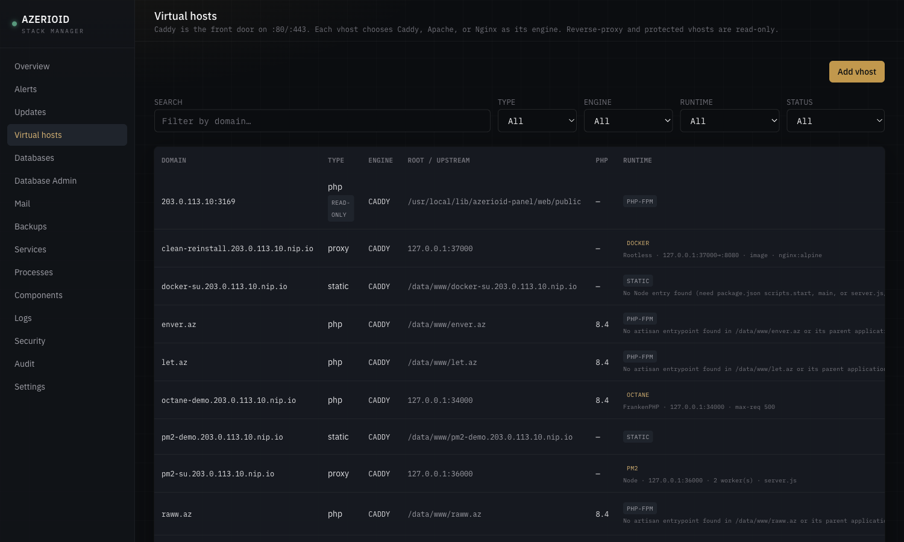
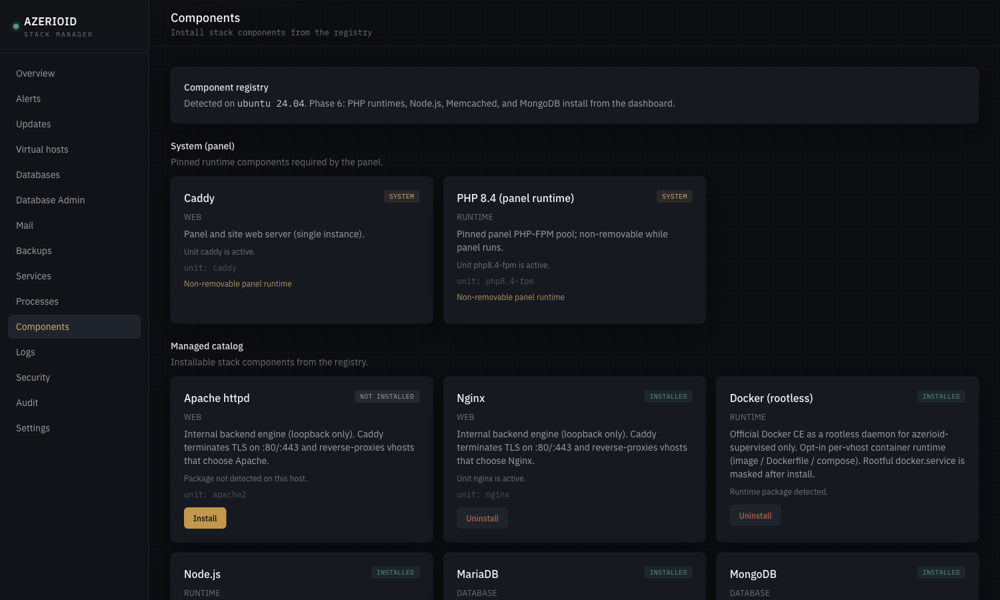
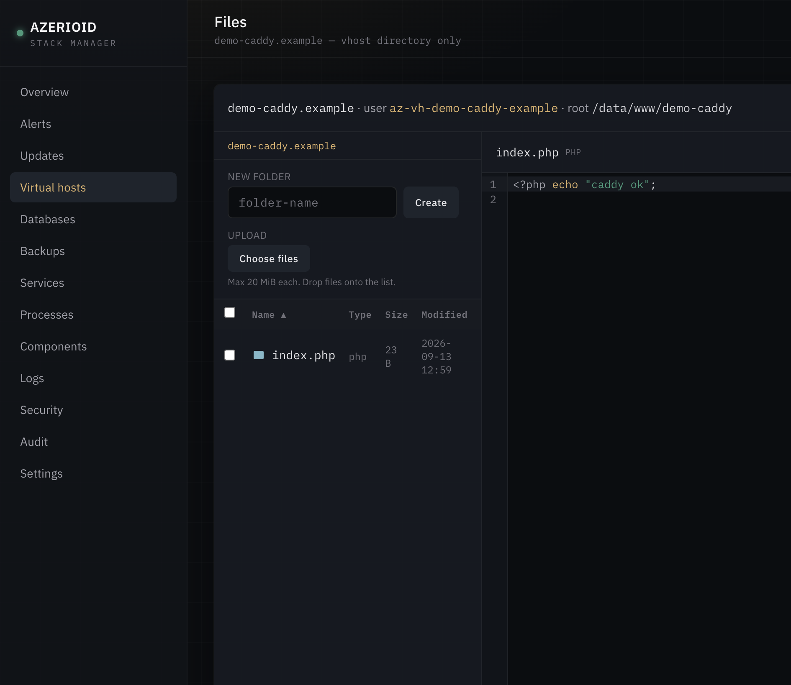
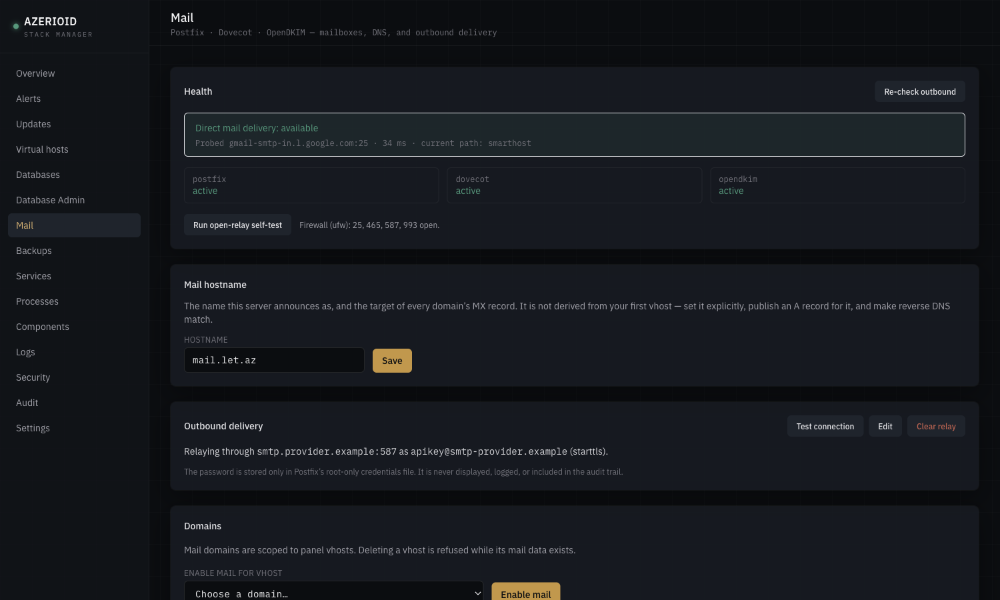
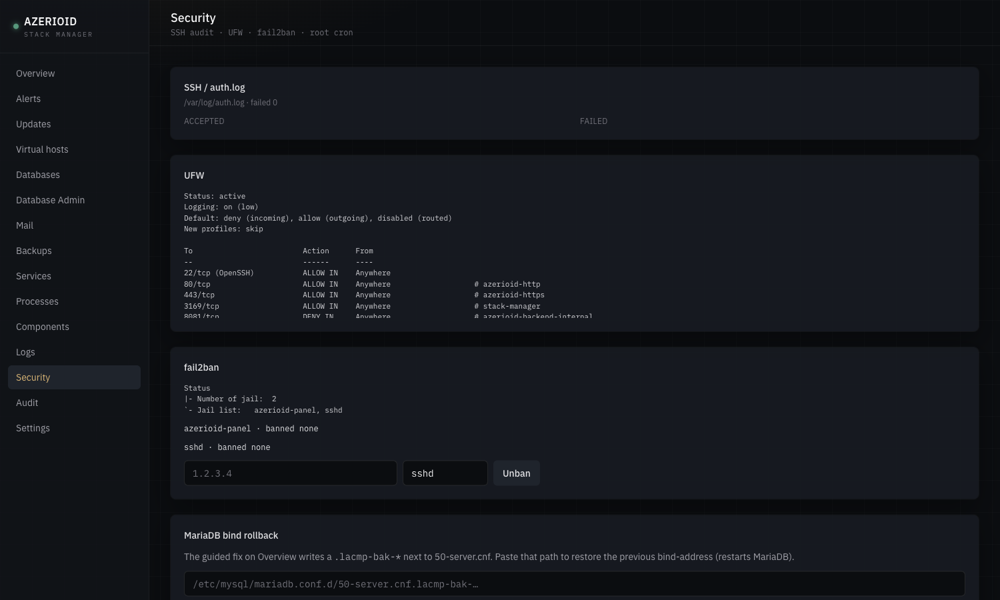

Every site on your server, in its own box.
A free web control panel for a VPS or bare-metal host. Caddy, PHP 8.1–8.4, Node.js, databases, mail and rootless Docker install on demand — and each site runs under its own account, its own PHP pool and its own Docker daemon.

A real UI for day-two work — and a CLI that does the same thing.
The bootstrap installs only what the panel needs. Everything else comes from a registry of official upstream packages, when you ask for it.
Three engines, one front door
Each site picks Caddy, Apache or Nginx. Caddy always owns :80/:443 and terminates TLS; the others run on loopback behind it.
Certificates without thinking
Let’s Encrypt over HTTP-01 automatically, DNS-01 through Cloudflare or DigitalOcean for wildcards, or an internal CA for private hosts.
PHP-FPM, Octane, PM2, Docker
Per site: plain PHP-FPM, Laravel Octane on FrankenPHP, a PM2 Node cluster on Node 20, 22 or 24, or a rootless Docker container.
Databases and cache
MariaDB, PostgreSQL, MongoDB, Redis, Memcached — with per-database access rules and Adminer behind the panel’s login. Elasticsearch too.
A mail server that tells the truth
Postfix, Dovecot and DKIM with copy-paste DNS records. It probes whether port 25 is blocked and steers you to a relay when it is.
File Manager and Terminal
Edit files and open a shell in the browser — always as the site’s own account, never as root, confined to that site.
Whole-site bundles
Files, configuration and the site’s databases in one bundle, with per-target schedules and retention, verified by restoring into a scratch database.
Git deploy with rollback
The deploy key stays with root; code is checked out and your build command runs as the site. Manual or scheduled, one-click rollback.
CLI, audit, self-update
azerioid drives the same privileged broker as the UI. Every action is audited; updates install release tags and roll back on failure.
Built for the person who is on call.




Install and remove stack components from a registry of official packages — the panel never runs a package manager itself.
Built as if every site on the server were hostile.
On most shared servers one compromised site can read every other site’s .env. Here each site is a separate Linux account, and every way code runs — web requests, workers, containers, the terminal — runs as that account.
An account and a group per site
Files, SFTP, cron, the Terminal and the File Manager all act as the site’s own az-vh-* account. No shared group opens one site to another.
A PHP-FPM pool per site
PHP runs as the site, on a socket only the web server can reach. On-demand workers: an idle site costs no memory.
Workers run as their site
Octane, PM2 and your own Supervisor programs run under the site they belong to — never under a shared account.
A Docker daemon per site
Rootless Docker, one daemon per Docker site, with its own id range. A container can reach its own site and nothing else.
A broker, not a root web app
The panel runs unprivileged. Every host change goes through a broker that allows a fixed list of actions and validates each one again.
Official packages. Installed when you ask.
- Caddy front door
- Nginx backend
- Apache backend
- PHP 8.1 – 8.4
- Node.js 20 · 22 · 24
- Octane · PM2
- Docker rootless
- MariaDB
- PostgreSQL
- MongoDB
- Redis · Memcached
- Elasticsearch
- Postfix · Dovecot
- OpenDKIM
- Supervisor
- Adminer
From a fresh server to a working panel.
Needs root, outbound HTTPS and git. The installer asks a few questions and never takes a password on the command line.
Run the installer on Ubuntu, Debian, AlmaLinux or Rocky Linux.
Choose access — an SSH tunnel by default, or HTTPS on your own panel domain.
Add a site from the dashboard or with azerioid vhost add.
$ git clone https://github.com/azerioid/azerioid-stack-manager.git stack-manager $ cd stack-manager $ sudo ./stack-manager.sh # then, over a tunnel: $ ssh -L 3169:127.0.0.1:3169 you@your-server # open http://127.0.0.1:3169/setup
Verified end to end — SELinux left on.
| System | Status | Notes |
|---|---|---|
| Ubuntu 24.04 | supported | Verified |
| Debian 12 / 13 | supported | Verified |
| AlmaLinux 9+ | supported | SELinux enforcing |
| Rocky Linux 9+ | supported | SELinux enforcing |
| CentOS Stream · RHEL · Oracle 9+ | supported | Same EL path |
| Fedora | not supported | The installer refuses it |
No license, no per-account fee.
Classic control panels charge per server and per account. This one costs what your server costs.
Per server, per month
Install it on as many servers as you run.
Sites and databases
Limited by your hardware, not by a tier.
Command to update
azerioid panel update apply — and an automatic rollback if it fails.
What it does not do (yet).
- One administrator — no multi-user roles.
- Mail has no webmail, spam filter, quotas or catch-all addresses.
- Deliverability still needs reverse DNS, which you set at your provider.
- Octane is for Laravel apps, PM2 for Node apps.
- One server per panel — no cluster management.
- Each Docker site runs its own daemon: budget about 100–170 MB of RAM per Docker site.
Questions.
Does the panel run as root?
No. The web panel runs as its own unprivileged account. Anything that changes the host goes through a separate broker that only accepts a fixed list of actions and checks every input again.
Can I keep using the command line?
Yes. The azerioid CLI covers the same operations as the dashboard and goes through the same broker, so both show up in one audit log.
How much memory does it need?
The panel itself runs comfortably on a 1 GB server. Components you add (databases, Docker, Elasticsearch) need their own memory; Elasticsearch asks for 2 GB of physical RAM.
What happens to my existing sites when I update?
Security changes migrate sites one at a time, check each site over HTTP before and after, and put a site back the way it was if it stops answering — then tell you which one and why.
Is my panel exposed to the internet?
Not by default: it listens on 127.0.0.1 and you reach it through an SSH tunnel. You can bind it to your own domain over HTTPS, with optional TOTP, fail2ban and an IP allowlist.